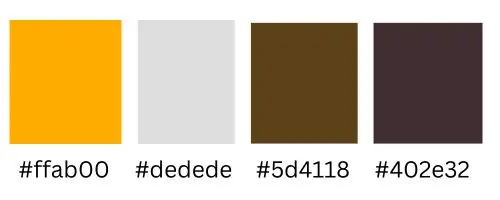
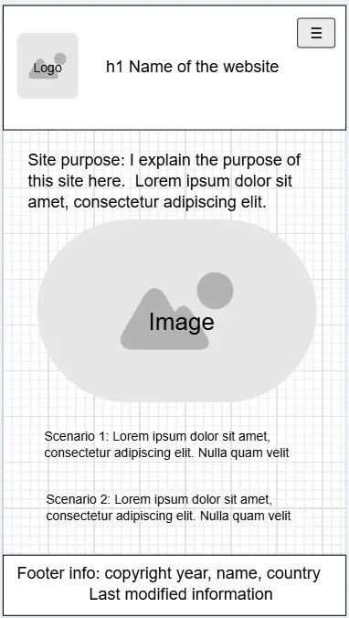
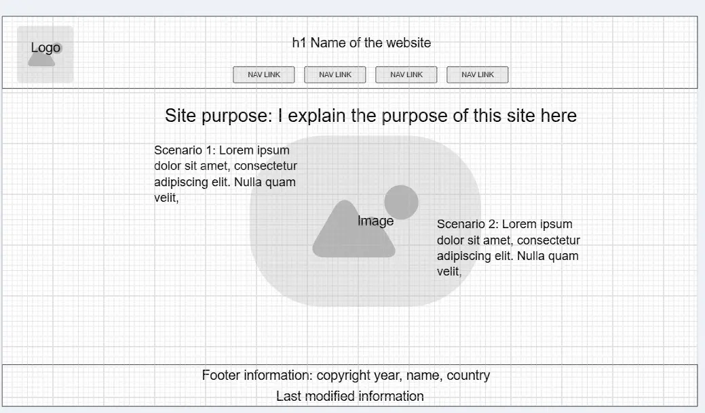

Site Name
Seoul Temple Life
I chose this name because I wanted it to be a short, personal name related to the Seoul Korea Temple and at the same time, not to create any confusion with official church sites.
Site Logo
Site Purpose
The purpose of my site is to invite users to experience the Seoul Korea Temple through my art and photos and provide directions to get to the temple.
Scenarios
How do I express temple and family history doctrine?
What does Seoul Korea Temple look like year round?
Color Schema

orange-yellow: rgb(255, 171, 0) #ffab00
I use this for the logo, hovered buttons and border on the scenarios
Here is an example of a button when hovered
Here is an example of using it as a border
ivory: rgb(222, 222, 222) #dedede
This is for the header, footer, and scenario background
The h2 elements in this document use this color for the background color
brown: rgb(93, 65, 24) #5d4118
This color is an accent border color on the bottom of the header and top of the footer, and background color on the purpose element for large screen view
The border at the bottom of the header on this document uses this color
Here is an example of how it's used on the scenario
brown/black: rgb(64, 46, 50) #402e32
I use this as font color
The headers and paragraph elements on this document use this color
Typography
Noto Sans Korean
This font is for the nav, h1, purpose and form labels
The headers in this document use Noto Sans Korean
Noto Serif Korean
I use this font as a secondary font. It is for the header and footer, h2, and text for the scenarios, grids, form and paragraphs on the Directions page
The paragraph text on this page use the Noto Serif Korean font
Wireframes
This is the home page layout for mobile screens

This is layout for desktop view
